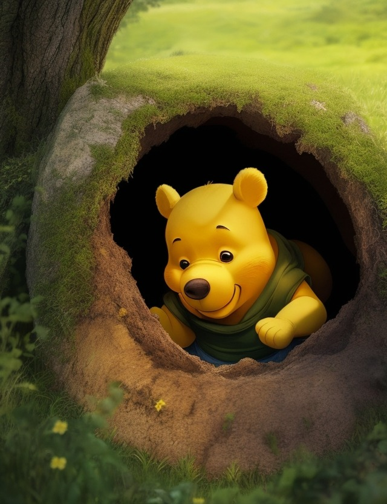

Винни-Пух и все-все-все. Продолжение 1.
Алан Милн
Глава вторая, в которой Винни-Пух пошел в гости, а попал в безвыходное положение
Как-то днем известный своим друзьям, а значит, теперь и вам, Винни-Пух (кстати, иногда для краткости его звали просто Пух) не спеша прогуливался по Лесу с довольно важным видом, ворча себе под нос новую песенку.
Ему было чем гордиться - ведь эту песенку-ворчалку он сам сочинил только сегодня утром, занимаясь, как обычно, утренней гимнастикой перед зеркалом. Надо вам сказать, что Винни-Пух очень хотел похудеть и потому старательно занимался гимнастикой. Он поднимался на носки, вытягивался изо всех сил и в это время пел так:
- Тара-тара-тара-ра!
А потом, когда он наклонялся, стараясь дотянуться передними лапками до носков, он пел так:
- Тара-тара-ой, караул, трам-пам-па!
Ну, вот так и сочинилась песенка-ворчалка, и после завтрака Винни все время повторял ее про себя, все ворчал и ворчал, пока не выучил ее всю наизусть. Теперь он знал ее всю от начала до конца. Слова в этой Ворчалке были приблизительно такие:
Тара-тара-тара-ра!
Трам-пам-пам-тарарам-пам-па!
Тири-тири-тири-ри,
Трам-пам-пам-тиририм-пим-пи!
И вот, ворча себе под нос эту Ворчалку и размышляя - а размышлял Винни-Пух о том, что было бы, если бы он, Винни, был не Винни-Пухом, а кем-нибудь совсем-совсем другим, - наш Винни незаметно дошел до песчаного откоса, в котором была большая дыра.
- Ага! - сказал Пух. (Трам-пам-пам-тирирам-пам-па!) - Если я что-нибудь в чем-нибудь понимаю, то дыра - это нора, а нора - это Кролик, а Кролик - это подходящая компания, а подходящая компания - это такая компания, где меня чем-нибудь угостят и с удовольствием послушают мою Ворчалку. И все такое прочее!
Тут он наклонился, сунул голову в нору и крикнул:
- Эй! Кто-нибудь дома?
Вместо ответа послышалась какая-то возня, а потом снова стало тихо.
- Я спросил: "Эй! Кто-нибудь дома?" - повторил Пух громко-громко.
- Нет! - ответил чей-то голос. - И незачем так орать, - прибавил он, - я и в первый раз прекрасно тебя понял.
- Простите! - сказал Винни-Пух. - А что, совсем-совсем никого нет дома?
- Совсем-совсем никого! - отвечал голос. Тут Винни-Пух вытащил голову из норы и задумался.
Он подумал так: "Не может быть, чтобы там совсем-совсем никого не было! Кто-то там все-таки есть - ведь кто-нибудь должен же был сказать: "Совсем-совсем никого!"
Поэтому он снова наклонился, сунул голову в отверстие норы и сказал:
- Слушай, Кролик, а это не ты?
- Нет, не я! - сказал Кролик совершенно не своим голосом.
- А разве это не твой голос?
- По-моему, нет, - сказал Кролик. - По-моему, он совсем, ну ни капельки не похож! И не должен быть похож!
- Вот как? - сказал Пух.
Он снова вытащил голову наружу, еще раз задумался, а потом опять сунул голову обратно и сказал:
- Будьте так добры, скажите мне, пожалуйста, куда девался Кролик?
- Он пошел в гости к своему другу Винни-Пуху. Они, знаешь, какие с ним друзья!
Тут Винни-Пух прямо охнул от удивления.
- Так ведь это же я! - сказал он.
- Что значит "я"? "Я" бывают разные!
- Это "я" значит: это я, Винни-Пух!
На этот раз удивился Кролик. Он удивился еще больше Винни.
- А ты в этом уверен? - спросил он.
- Вполне, вполне уверен! - сказал Винни-Пух.
- Ну хорошо, тогда входи!
И Винни полез в нору. Он протискивался, протискивался, протискивался и наконец очутился там.
- Ты был совершенно прав, - сказал Кролик, осмотрев его с головы до ног. - Это действительно ты! Здравствуй, очень рад тебя видеть!
- А ты думал, кто это?
- Ну, я думал, мало ли кто это может быть! Сам знаешь, тут, в Лесу нельзя пускать в дом кого попало! Осторожность никогда не повредит. Ну ладно. А не пора ли чем-нибудь подкрепиться?
Винни-Пух был всегда не прочь немного подкрепиться, в особенности часов в одиннадцать утра, потому что в это время завтрак уже давно окончился, а обед еще и не думал начинаться. И, конечно, он страшно обрадовался, увидев, что Кролик достает чашки и тарелки. А когда Кролик спросил "Тебе чего намазать - меду или сгущенного молока?" - Пух пришел в такой восторг, что выпалил: "И того и другого!" Правда, спохватившись, он, чтобы не показаться очень жадным, поскорее добавил: "А хлеба можно вообще не давать!"
И тут он замолчал и долго-долго ничего не говорил, потому что рот у него был ужасно занят.
А спустя долгое время, мурлыкая что-то сладким-сладким голоском - голос у него стал прямо-таки медовый! - Пух встал из-за стола, от всей души пожал Кролику лапу и сказал, что ему пора идти.
- Уже пора? - вежливо спросил Кролик.
Нельзя ручаться, что он не подумал про себя: "Не очень-то вежливо уходить из гостей сразу, как только ты наелся". Но вслух он этого не сказал, потому что он был очень умный Кролик.
Вслух он спросил:
- Уже пора?
- Ну, - замялся Пух, - я мог бы побыть еще немного, если бы ты... если бы у тебя... - запинался он и при этом почему-то не сводил глаз с буфета.
- По правде говоря, - сказал Кролик, - я сам собирался пойти погулять.
- А-а, ну хорошо, тогда и я пойду. Всего хорошего.
- Ну, всего хорошего, если ты больше ничего не хочешь.
- А разве еще что-нибудь есть? - с надеждой спросил Пух, снова оживляясь.
Кролик заглянул во все кастрюли и банки и со вздохом сказал:
- Увы, совсем ничего не осталось!
- Я так и думал, - сочувственно сказал Пух, покачав головой. - Ну, до свиданья, мне пора идти.
И он полез из норы. Он изо всех сил тянул себя передними лапками и изо всей мочи толкал себя задними лапками, и спустя некоторое время на воле оказался его нос... потом уши... потом передние лапы... потом плечи... а потом... А потом Винни-Пух закричал:
- Ай, спасите! Я лучше полезу назад!
Еще потом он закричал:
- Ай, помогите! Нет, уж лучше вперед!
И, наконец, он завопил отчаянным голосом:
- Ай-ай-ай, спасите-помогите! Не могу ни взад ни вперед!
Тем временем Кролик, который, как мы помним, собирался пойти погулять, видя, что парадная дверь забита, выбежал наружу черным ходом и, обежав кругом, подошел к Пуху.
- Ты что - застрял? - спросил он.
- Не-ет, я просто отдыхаю, - ответил Пух, стараясь говорить веселым голосом. - Просто отдыхаю думаю кой о чем и пою песенку...
- Ну-ка, дай мне лапу, - строго сказал Кролик.
Винни-Пух протянул ему лапу, и Кролик стал его тащить.
Он тащил и тащил, он тянул и тянул, пока Винни не закричал:
- Ой-ой-ой! Больно!
- Теперь все ясно, - сказал Кролик, - ты застрял.
- Все из-за того, - сердито сказал Пух, - что выход слишком узкий!
- Нет, все из-за того, что кто-то пожадничал! - строго сказал Кролик. - За столом мне все время казалось, хотя из вежливости я этого не говорил, что кто-то слишком много ест! И я твердо знал, что этот "кто-то" - не я! Делать нечего, придется сбегать за Кристофером Робином.
Кристофер Робин, друг Винни-Пуха и Кролика, жил, как вы помните, совсем в другом конце Леса. Но он сразу же прибежал на помощь и, когда увидел переднюю половину Винни-Пуха, сказал: "Ах ты, глупенький мой мишка!" - таким ласковым голосом, что у всех сразу стало легче на душе.
- А я как раз начал думать, - сказал Винни, слегка хлюпая носом, - что вдруг бедному Кролику уже никогда-никогда не придется ходить через парадную дверь... Я бы тогда очень-очень огорчился...
- Я тоже, - сказал Кролик.
- Не придется ходить через парадную дверь? - переспросил Кристофер Робин. - Почему? Пожалуй, придется...
- Ну вот и хорошо, - сказал Кролик.
- Пожалуй, придется втолкнуть тебя в нору, если мы не сможем тебя вытащить, - закончил Кристофер Робин.
Тут Кролик задумчиво почесал за ухом и сказал, что ведь если Винни-Пуха втолкнуть в нору, то он там останется насовсем. И что хотя он, Кролик, всегда безумно рад видеть Винни-Пуха, но все-таки, что ни говори, одним полагается жить на земле, а другим под землей, и...
- По-твоему, я теперь никогда-никогда не выйду на волю? - спросил Пух жалобно.
- По-моему, если ты уже наполовину вылез, жаль останавливаться на полпути, - сказал Кролик.
Кристофер Робин кивнул головой.
- Выход один, - сказал он, - нужно подождать, пока ты опять похудеешь.
- А долго мне нужно худеть? - испуганно спросил Пух.
- Да так, с недельку.
- Ой, да не могу же я торчать тут целую неделю!
- Торчать-то ты как раз отлично можешь, глупенький мой мишка. Вот вытащить тебя отсюда - это дело похитрее!
- Не горюй, мы будем читать тебе вслух! - весело воскликнул Кролик. - Только бы снег не пошел... Да, вот еще что, - добавил он, - ты, дружок, занял у меня почти всю комнату... Можно, я буду вешать полотенца на твои задние ноги? А то они торчат там совершенно зря, а из них выйдет чудесная вешалка для полотенец!
- Ой-ой-ой, це-е-лу-ю неделю! - грустно сказал Пух. - А как же обедать?!
- Обедать, дорогой мой, не придется! - сказал Кристофер Робин. - Ведь ты должен скорей похудеть! Вот читать вслух - это мы тебе обещаем!
Медвежонок хотел вздохнуть, но не смог - настолько крепко он застрял. Он уронил слезинку и сказал:
- Ну, уж вы тогда хотя бы читайте мне какую-нибудь удобоваримую книгу, которая может поддержать и утешить несчастного медвежонка в безвыходном положении...
И вот целую неделю Кристофер Робин читал вслух именно такую удобоваримую, то есть понятную и интересную, книжку возле Северного Края Пуха, а Кролик вешал выстиранное белье на его Южный Край... И тем временем Пух становился все тоньше, и тоньше, и тоньше.
А когда неделя кончилась, Кристофер Робин сказал:
- Пора!
Он ухватился за передние лапы Пуха, Кролик ухватился за Кристофера Робина, а все Родные и Знакомые Кролика (их было ужасно много!) ухватились за Кролика и стали тащить изо всей мочи.
И сперва Винни-Пух говорил одно слово:
- Ой!
А потом другое слово:
- Ох!
И вдруг - совсем-совсем вдруг - он сказал:
- Хлоп! - точь-в-точь как говорит пробка, когда она вылетает из бутылки.
Тут Кристофер Робин, и Кролик, и все Родные и Знакомые Кролика сразу полетели вверх тормашками! Получилась настоящая куча мала.
А на верху этой кучи очутился Винни-Пух - свободный!
Винни-Пух важно кивнул всем своим друзьям в знак благодарности и с важным видом отправился гулять по Лесу, напевая свою песенку. А Кристофер Робин посмотрел ему вслед и ласково прошептал:
- Ах ты, глупенький мой мишка!
Продолжение следует